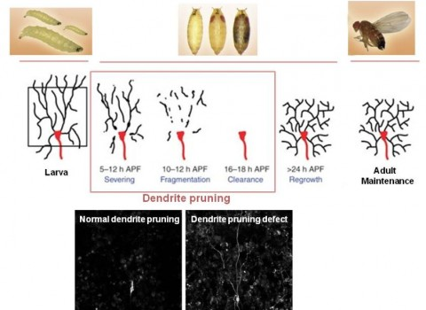

Project
Four core research directions connecting neuronal homeostasis, protein dynamics, aging, and neurodegenerative disease.

Project 04
Protein dynamics-based control of protein toxicity in neurodegenerative diseases
Characterization of neuronal abnormalities associated with toxic protein aggregation and development of strategies that restore protein quality control.

Project 03
Cellular basis of various neurodegenerative diseases
Studying early neuronal changes associated with Parkinson’s disease, ALS/FTD, polyQ disorders, and related disease models.

Project 02
Neuronal maintenance and remodeling
Studying dendritic maintenance and remodeling during aging and defining how these processes influence late-onset neuronal disorders.

Project 01
Ion & RNA Homeostasis required for neuronal maintenance
Investigating the local ion and mRNA homeostasis needed to preserve highly polarized neuronal structures far from the cell body.